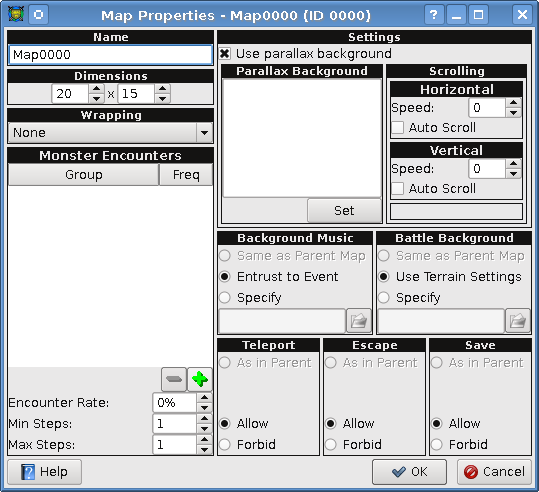

[User Interfaces]->[Map Properties]

- Name:
- This contains the visible name of the map.
- Dimensions:
- Here you can modify the width and/or the height of the map.
- Wrapping:
- Controls whether the player wraps around the map when they reach an edge. Can either be set to none, horizontal, vertical, or both.
- Monster Encounters:
- This is where you can add/delete monster groups from the encounter list, as well as set the encounter rates.
- Monster Encounters -> Encounter Rate:
- This is the percent chance per step at which battles will be faught.
- Monster Encounters -> Min Steps:
- The minimum number of steps taken before a battle can be initiated.
- Monster Encounters -> Max Steps:
- The maximum number of steps taken before a battle is automatically initiated.
- Parallax Background:
- This is the background image used for the map.
- Scrolling:
- This controls whether the background image scrolls horizontally/vertically, and can be set to scroll with the player, or auto-scroll.
- Background Music:
- This is where the background music for the map is controlled. The BGM can either be the same as the parent map, entrusted to map events to determine a BGM, or specified manually.
- Battle Background:
- This controlls the background image used in battles, which can either be the same as the parent map, based on the terrain, or specified manually.
- Teleport:
- Controls whether the player can use a teleport ability in battle.
- Escape:
- Controls whether the player can use the escape command in battle.
- Save:
- Controls whether the save command in the menu can be accessed.